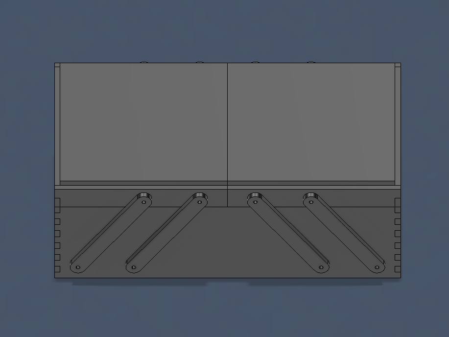
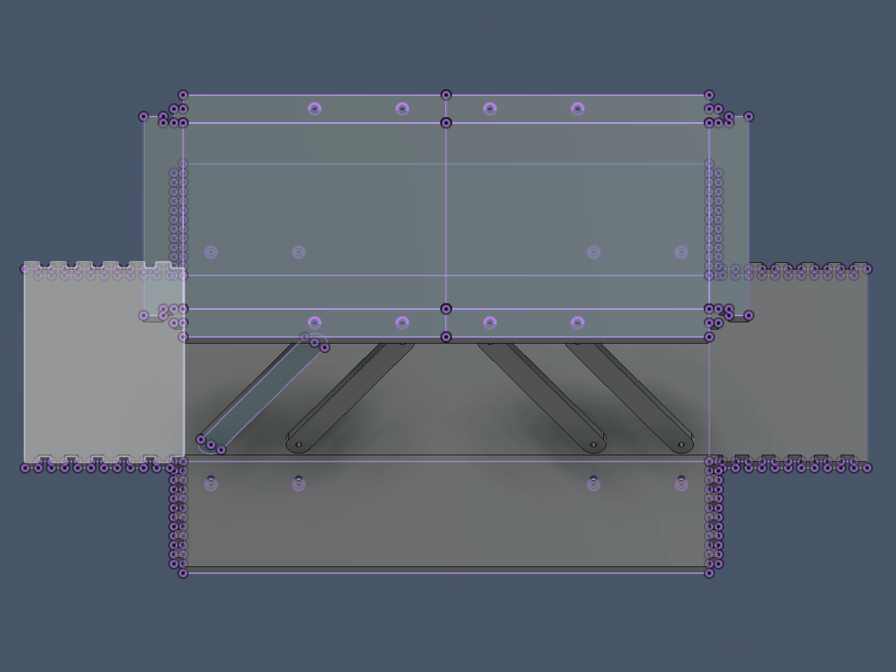
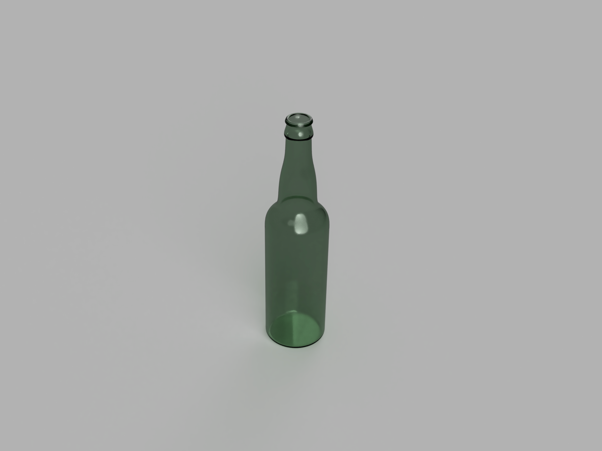
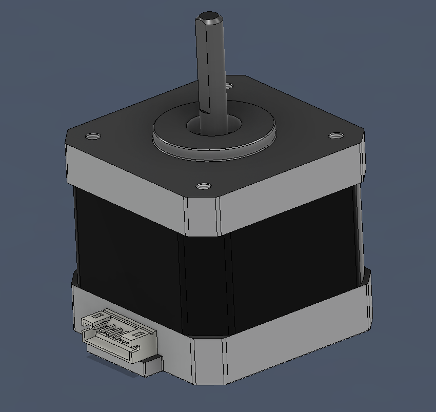
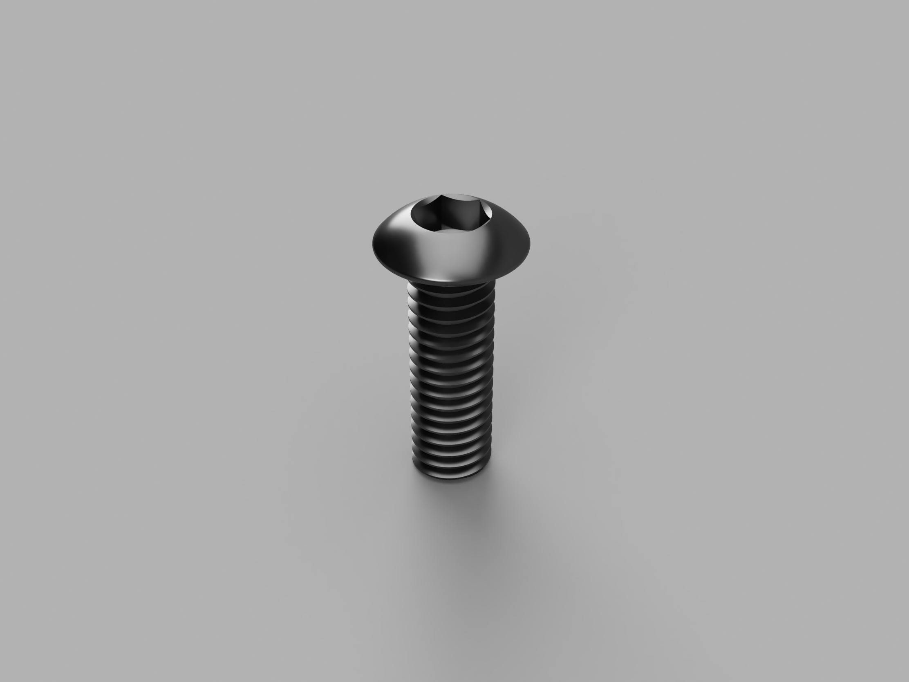

Week 2: 2D/3D Design
You have three assignments: design a cardboard box, work through a Fusion 360 tutorial, and model some household objects or components from the lab. Include some pictures and downloads to your 3D models.
Box Design
I designed my box as a 10" x 5" box, with a two part lid. The lid mechanism itself was inspired by other toolboxes with 4 bar linkages on their lids, which I found an interesting mechanism. I originally wanted to make an inequal link length mechanism where the box lid would pivot to be resting against the side of the box, but even after several attempts I was unable to get the geometry of the links to work out, so I resorted to the simpler to plan four bar design. The box isn't perfect, there are some tolerance issues such that the lid and body do not meet fully in the closed position, and the overall flimisiness of the cardboard pivot arms, but overall it's pretty good. To attach the arms themselves, I used M3 screws and nuts as pivot points, although those may unscrew themselves over time, I may need to replace them with locknuts.


Here is the download for the box design, including the dxf files as well as the f3d source file.
To design the box, I used a combination of 2D design techniques to create the patterns for the top and bottom parts of the box that would be folded. To figure out how the linkages would work and where the holes needed to be, I extruded the 2d templates and folded the box into a 3D shape so I could mock up the linkages inside Fusion. Then, I unfolded the box in Fusion and projected new sketches on all the parts to capture what needed to be cut in the final design.


Fusion 360 Tutorial
For the Fusion tutorial, I chose to follow this tutorial to create a glass bottle using the revolve and shell commands. I knew about the revolve tool, but I did not know about the shell command and in addition, the video helped me with my reference image tracing skills. I also completed a render of the bottle for presentation on the website.

CAD Practice
The first item I designed was a model of a NEMA 17 stepper motor with a 37mm case length. I measured the outer dimensions and modeled each visible outer piece as seperate components inside Fusion. I also made sure to add the screws on the bottom and the top screw threads. The inside of the motor is not modeled, but the shaft is accurately measured. Download the model here.

The second item I modeled was a M4x12mm button head screw, to practice a simple part design. I used the thread tool to model the threads on the screw body itself and I used a polygon in a sketch to make the hex key hole, with a drill taper at the bottom of the hex hole which I created with the hole tool. Download the model here.
